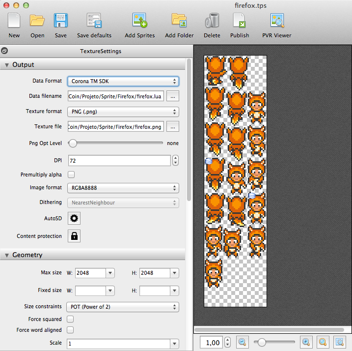

O TexturePack é um software utilizado para gerar sprite sheets compatíveis com diversos frameworks, como Cocos2d e Corona SDK. Ele possui diversas opções de otimização, e um recurso bem interessante é o de gerar sprite sheets para varias resoluções.
Sprite sheet é, basicamente, uma imagem que contem diversas outras imagens menores, podendo ser frames de uma animação ou apenas imagens isoladas. Este tipo de recurso é muito usado em jogos para otimizar o consumo de memória, pois manter uma imagem na memória custa menos para o hardware do que diversas menos, além de ser mais pratico de usar.
Posso definir o TexturePacker como essencial e incrível, pois ele não somente junta imagens para formar a sprite sheet como também faz isso da maneira mais otimizada possível. Algumas vezes ele até girar as imagens para agrupar melhor, mas isso não influencia na hora de usar, você não precisa girar a imagem de volta. O TexturePacker possui suporte para vários frameworks 2D.
Ao publicar uma sprite sheet, a imagem com todos sprites é gerada junto com um arquivo de configuração, que pode ser desde um XML ou plist, até um script Lua (no caso do Corona). Basta importar ambos no código e usar. Cada frameworks possui sua maneira de carregar estes arquivos, aqui vou mostrar como é feito no Corona SDK.
O primeiro passo é importar as imagens para o TexturePacker. Você pode selecionar uma ou mais imagens, ou uma pasta inteira. Neste caso eu selecionei as imagens em “Add Folder”. Depois selecionamos o framework que iremos utilizar. O Corona possui duas opções, mas eu sinceramente não sei a diferenças, pois testei com ambos e o resultados é o mesmo. Eu geralmente seleciono a opção “Corona TM SDK”.

Agora vamos a parte mais legal, que é gerar para múltiplas resoluções a partir de um sprite sheet. Para ter o melhor resultado, sempre gere a partir da maior resolução. Neste exemplo usei imagens para iPad Retina, que é a maior tela com iOS, e vou gerar para iPad 2 e iPhone a partir dele. Embora eu esteja fazendo este exemplo para iOS, você pode gerar para qualquer dispositivo móvel ou desktop, o importante é partir da maior resolução que você vai suportar no seu jogo.
Clicando em “AutoSD”, a janela abaixo é apresentada. Nela, selecionamos a opção “corona @4X/@2X” para gerar as imagens para iPad Retina (4X), iPad 2 (2X) e iPhone.

Após selecionar esta opção, clique em Apply e os dois grupos abaixo serão criados. Neste post não irei alterar os valores default apresentados, mas algumas melhorias podem ser feitas aqui, como selecionar um nome padrão para as imagens (se você não gostar de @4X e @2X) e modificar o tamanho da spritesheet máximo.

Depois de fechar esta janela (você clicar fora dela para fechar, ou clicar em Apply), é necessário renomear os arquivos que serão gerados, como mostrado na imagem abaixo. No final do nome, antes da extensão, adicione “@4X” ou o nome que você colocou na imagem anterior para o iPad Retina.

Com isso pronto, clique no botão “Publish”. Serão gerados dois arquivos, um PNG com todos sprites juntos (que é a sprite sheet) e um arquivo LUA (por que selecionamos Corona SDK) para cada tamanho (normal, 2X e 4X). Copie estes dois arquivos para dentro do seu projeto feito no Corona SDK, pode colocar no mesmo lugar que está o seu “main.lua” se tiver dúvidas. Para exibir um sprite, basta executar o código abaixo. Estou considerando que o nome da sprite sheet de tamanho normal é “firefox”.
-- aqui carregamos o arquivo LUA local sheetInfo = require ("firefox") --normal local sheetInfo2x = require ("firefox@2x") --ipad 2 local sheetInfo4x = require ("firefox@4x") --ipad retina -- aqui carregamos o arquivo PNG local imagesSheet = graphics.newImageSheet("firefox.png", sheetInfo:getSheet()) --normal local imagesSheet2x = graphics.newImageSheet("firefox@2x.png", sheetInfo2x:getSheet()) --ipad 2 local imagesSheet4x = graphics.newImageSheet("firefox@4x.png", sheetInfo4x:getSheet()) --ipad retina -- aqui carregamos a imagem chamada firefox00.png, mas sem a extensão local image = display.newSprite(imagesSheet, {frames={sheetInfo:getFrameIndex("firefox00")}}) --normal local image2x = display.newSprite(imagesSheet2x, {frames={sheetInfo2x:getFrameIndex("firefox00")}}) --ipad 2 local image4x = display.newSprite(imagesSheet4x, {frames={sheetInfo4x:getFrameIndex("firefox00")}}) --ipad retina
Note que para carregar a imagem, procuramos pelo nome do frame adicionado no TexturePacker, ou seja, o nome da imagem individual. Este exemplo acima é apenas para mostrar como podemos carregar cada tamanho, você deve usar isso de maneira mais otimizada, como carregar apenas o que for utilizar ao invés de todos tamanhos de imagem.
Espero que tenham gostando deste tutorial do uso do TexturePacker com Corona SDK, qualquer dúvida deixe um comentário! Conheça também as outras features legais do TexturePacker clicando aqui.
Você pode baixar a versão trial do TexturePacker aqui, que possui versões para Windows, Mac e Linux. Eu recomendo comprar, pois é uma ferramenta incrível para desenvolver jogos, principalmente mobile. Muito obrigado ao Andreas Leow, da CodeAndWeb, que me enviou a licença para testar o TexturePacker. Em breve postarei outro sobre outro produto deles, o PhysicsEditor.
As imagens utilizadas aqui são do jogo open source BrowserQuest, disponível no GitHub do Mozilla.